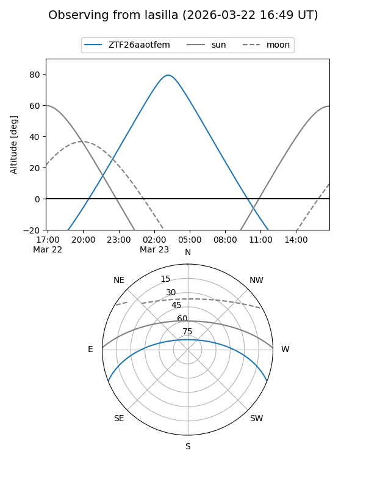
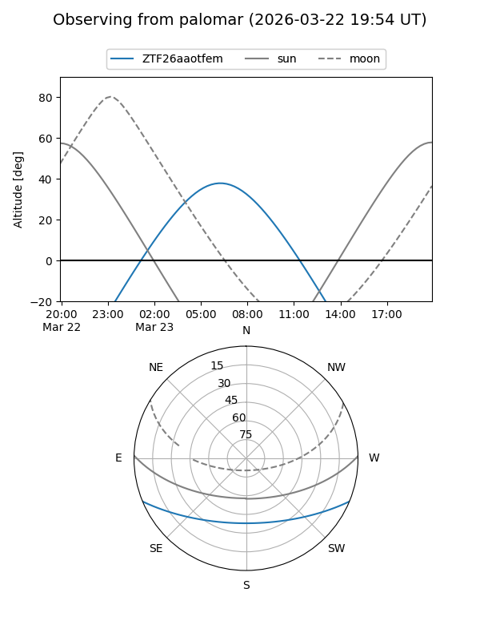

ZTF26aaotfem
Target ZTF26aaotfem at 2026-03-23 08:03
Aliases and brokers:
FINK: link
Lasair: link
ALeRCE: link
alt names
ZTF26aaotfem (ztf,fink_ztf)
Coordinates:
equatorial (ra, dec) = 157.3267,-18.61338
equatorial (HMS+DMS) = 10:29:18.40,-18:36:48.17
galactic (l, b) = (262.0276,+32.74035)
Flags:
Photometry:
last ztfg=16.72
1 ztfg detections
Lightcurve
Visibility


Additional plots